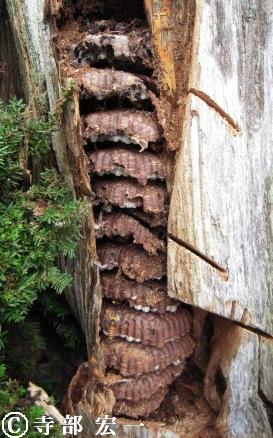
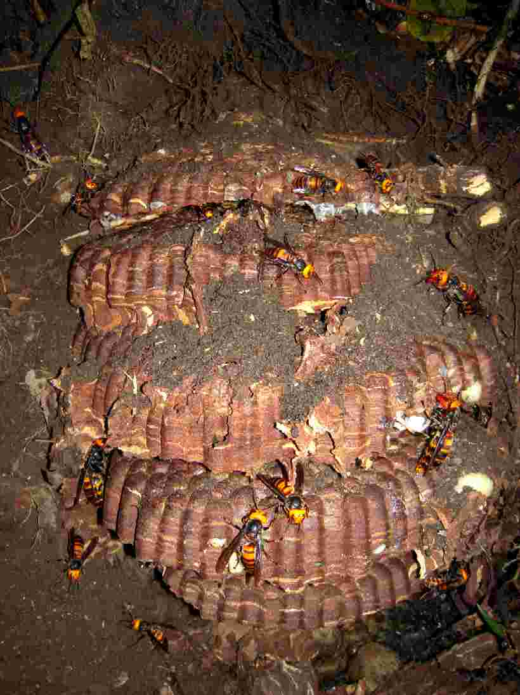
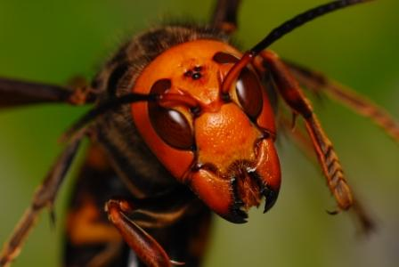
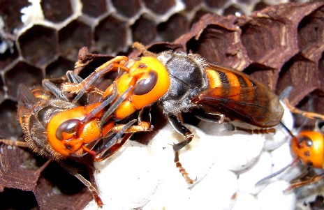
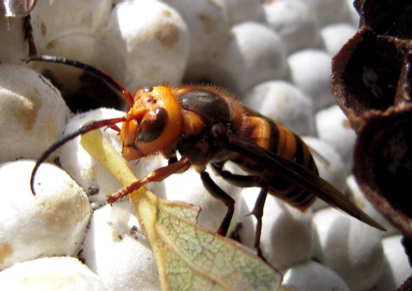

オオスズメバチ
（Vespa mandarinia japonica Radoszkowski）
・働き蜂、女王蜂など成虫がとにかく大きく、飛んでいる姿は4～5センチにも見える。
・巣は土の中に作られることが多いが、屋根裏などの閉鎖空間に作られることもある。
・刺された時の被害はひどく、数箇所刺されだけで死にいたることも。
オオスズメバチは、6月ごろ女王蜂が越冬から覚め、巣づくりを始めます。7月頃には働き蜂も生まれ、巣の拡大が続けられます。
9月から10月には、オオスズメバチもピークを迎え、巣の大きさは、その年最大となります。もちろんこの時期が一番危険な時期となります。
雄蜂は9月から10月頃羽化してきて、10月から11月には新女王蜂が生まれてきます。もちろんこれは地域によっても多少時期は違ってきます。
オオスズメバチは世界最大級の社会性狩り蜂です。ハチの大きさ、巣の規模、毒の量、攻撃力どれをとってもスズメバチナンバーワンです。
女王蜂は35～45ｍｍにもなります。働き蜂でさえ27ｍｍ以上、大きい時には40ｍｍにもなります。
オオスズメバチはあごも強力で、噛み付かれるだけでもかなり痛いです。
絶対に刺されたくないスズメバチで、昆虫界最大の捕食者でもあります。カミキリムシやコガネムシ、カマキリなどの大きな昆虫も捕まえては持ち帰り、幼虫の餌にします。
また土の中に巣を作るため、巣の発見が遅れてしまいキケンなスズメバチでもあります。
秋になり餌となる昆虫が減ってくると、ミツバチやその他のスズメバチまでターゲットにし、集団攻撃を仕掛け、幼虫やさなぎを根こそぎ自分達の幼虫の餌にしてしまいます。
これはオオスズメバチの『マスアタック（集団攻撃）』とも呼ばれています。

切り株の中にできた12段もあるオオスズメバチの巣
土の中に営巣していたオオスズメバチオオスズメバチ
スズメバチって人を攻撃してくるイメージがありますが、これは、自分達の巣を守るための防衛策なんです。ですから、基本的にはスズメバチの巣に近づかなければほとんど問題は無いのです。
しかしオオスズメバチはちょっとやっかいです。
なんせ相手は土の中に高級アパートを作っています。その上働き蜂の攻撃性はかなり高く、物音に大変敏感です。
スズメバチに刺される被害というのは７月から１１月に発生し、特に働き蜂が一番多くなる９月から１０月が一番危険だといわれています。
この時期は、とにかく山歩きの際など特に気をつけた方がいいですね。
オオスズメバチの攻撃パターンというのは、カチカチという音を出しながら、2～3メートルの高さをホバリングし、一直線に体当たりをして刺しに来ます。
防護服なしでは、さすがの私も降参です。一度室内でこれを受け、頭が真っ白になったことがありました・・・。
また人が巣の付近まで近づくと、かなりしつこく追いかけてくるうえに、脚で敵にしがみつき、あごで噛み付いてから何度も刺してきます。
これは想像しただけで恐ろしいですね・・・。
オオスズメバチに刺されるパターンというのは、だいたい巣の付近を何も知らないで通ってしまい、蜂を刺激した場合に起こります。
農村地帯で草刈りの作業中や、遠足ハイキング、オリエンテーション、きのこ採り、狩猟など野山に入っていく場合に被害が発生しています。
また特に問題なのが、このオオスズメバチに刺された時の被害です。というのも刺された時の痛みや腫れは、全ての蜂の中で一番ひどいからです。
同時にたくさんのオオスズメバチに刺された場合には、蜂の毒のアレルギーだけでなく、オオスズメバチの毒だけでなくなられるケースがあるという事です。
ちなみにこの毒液中には、同じ巣の仲間を興奮させ、敵の接近を伝える警報フェロモンが 含まれています。
・オオスズメバチの警報フェロモンの正体とは。
一番大きくて立派なスズメバチですが、一番危険なスズメバチです。どうぞ気を付てください！
スズメバチ属(vespa)

越冬から目覚め活動を始めた女王蜂（調布市・千葉昌生撮影）

栄養交換をするオオスズメバチ
オオスズメバチの雄蜂 長い触角が特徴-
生け捕り捕獲など

-
種類や生活史・巣の場所等

-
被害者や対策・対応等

-
すずめばちやについて